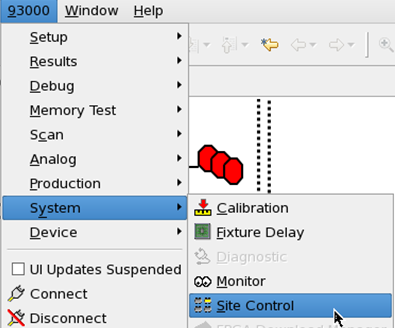
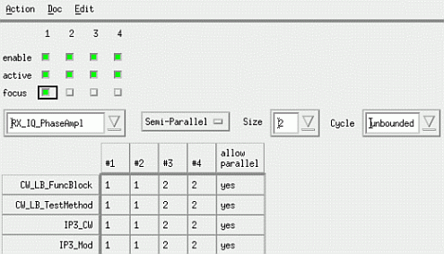
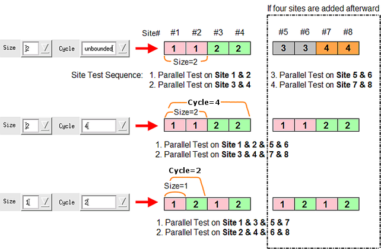
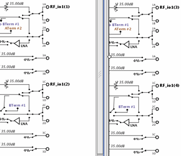
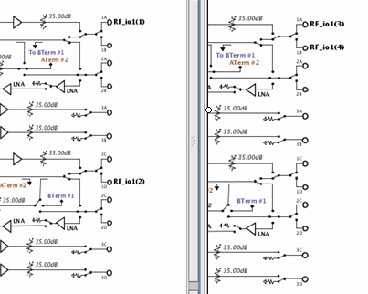

Semi-parallel best practices
This topic focuses on rules and examples for programming test methods for multisite hardware if resources are limited.
If you have enough resources available, refer to Usage of Parallel Hardware (PPMU).
General rules
- Use semi-parallel when you have not enough analog resources for full parallelism multisite testing to improve throughput with limited resources
- Set a test suite to run in semi-parallel and the test sequence for different sites
- Share AWG/DGT by adding relays on the DUT board
Multisite resource assignment rules
Pin Scale card
- Assign the same pins to the same hardware
- Assign pins, connecting to Board ADC. to different logic boards for different sites
DPS
Use a separate DPS channel for each DUT supply.
- DUT power supplies suffer from same noise issue as ground
- Voltage spikes from transient current switching of digital circuits
- Noise on RF and Analog supplies degrades SNR
- Noise generated from digital circuit can couple to RF or analog circuit if same supply is used for both
- Using separate DPS channels reduces the potential for noise to couple on power supplies between digital, RF, and analog circuits
Use separate DPS channels at each site
- For multi-site applications, use separate DPS channels at each site to reduce the potential for noise to couple from one site to another
Using SmartCalc with result areas
A result area only holds the results from one functional, capture, or DC test. The most recent test overwrites all previous results.
Before you re-use a result area in a testflow use SMC_SYNCHRONIZE() to upload all results. For semi-parallel execution, ensure that you allocate individual result areas for each semi-parallel group execution. If you would use only a single result area for all groups SmarTest will only hold the results from the last group.
Syntax
ON_FIRST_INNOVATION_BEGIN();
...
...
FOR_EACH_SITE_BEGIN();
if (CURRENT_SITE_NUMBER() == 1 || CURRENT_SITE_NUMBER() == 2)Set semi parallel sequence in the test suite
in the graphical user interface, refer to the Expanded Site Control window:


{
//
// Switch routing or relay
//
...
...
}
if (CURRENT_SITE_NUMBER() == 3 || CURRENT_SITE_NUMBER() == 4)
{
//
// Switch routing or relay
//
...
...
}
FOR_EACH_SITE_END();
...
...
ON_FIRST_INNOVATION_END();Examples
General example
For example, to test sites 1 and 2 in parallel and then sites 3 and 4 in parallel for four-site semi-parallel testing, you can set up the test sequence by specifying Size = 2 and Cycle = Unbounded. Each parallel test in the semi-parallel test will be executed from the group including site 1 in numerical order.
If test sites are added afterward, additional sites will be tested according to the Size and Cycle settings. Therefore, you do not have to set up this again.
The figure below shows three examples of the site test sequence settings including the above typical example.

You can also enter the order numbers directly into the Site Test Sequence field. Hence, you can set up a free site test sequence. In this case, if test sites are added afterward, additional sites will be tested in parallel after tests of the existing sites are completed.
The Parallel and Serial buttons can be used to change the site test sequence from Semi-Parallel or free sequence to the Parallel or Serial sequence.
TIP: You can also set up the site test sequence for all test suites in the Site Control window. If you want to set it up for many test suites once, it is better to use the Site Control window.
Semi parallel measurement on ports 1A - 1D
The following picture shows a symmetrical quad sites configuration based on two Front End cards. The left part shows the first front end card while the right part shows the second front end card. This setup does not use shared resources. Stimuli to the different sites can be provided in parallel. The measurements are configured in a semi parallel configuration using two cycles.

The following pictures shows the usage of a non symmetrical setup on two Front End Cards. In this case, Stimuli and Measurement are semi parallel.

Parallel, semi-parallel or serial testing are controlled by the Expanded Site Control window. In a quad site application using two Front End cards, you could use 2 measurement cycles as illustrated below
Functional changes
- Introduced in SmarTest 6.5.4